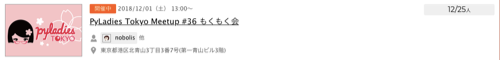
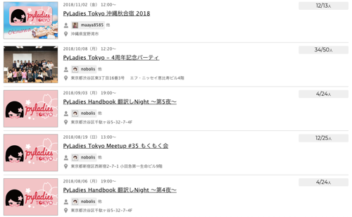
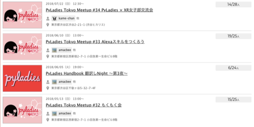
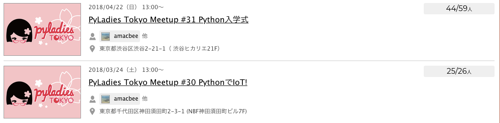
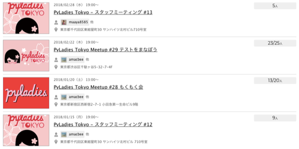
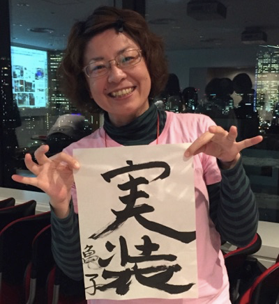

鉄は熱いうちに打て
=============================
PyLadies Tokyo Meetup #36 もくもく会¶
2018-12-01
PyLadies Advent Calendar 2018 - Adventar の1日目です。
今日は、PyLadies Tokyo Meetup #36 もくもく会 です！
もくもく会の最中にブログを書いているので現在形です。
本日はSQUEEZE 様のスペースをお借りしてモクモク会を開催しています。#PyLadiesTokyo pic.twitter.com/9LNjIqYPnR
— PyLadiesTokyo (@PyLadiesTokyo) 2018年12月1日
モクモクの様子です #PyLadiesTokyo pic.twitter.com/gvAa2Nwf0V
— PyLadiesTokyo (@PyLadiesTokyo) 2018年12月1日
参加者の方も PyLadies Advent Calendar 2018 - Adventar に登録してくれました！ありがとうございます！！ まだまだ、枠が空いているので男女問わず登録お願いします！
今年のイベントの振り返り¶
今年のイベントを振り返ります。延べ 266人 の方にご参加いただきました。ありがとうございます！！
各詳細は、 PyLadies Tokyo - イベント一覧 - connpass を見てください。
色々なイベントを開催して、あっという間の1年でした。
   去年まではスタッフじゃなくて、土日開催のものにはほとんど参加していなかったので今年はたくさんの方とお話できて楽しい一年でした。
PyLadies Caravan¶
来年からは、 PyLadies Caravan がはじまります！
Pythonを通じてプログラミングを学んだり、現役エンジニア、Pythonistaと交流したりして、女性同士新たなPython仲間と出会う場になればという思いで企画したイベントです。 もうすぐ、connpassにイベントが立つので、お近くの方も遠くの方も是非参加してください！！
個人的振り返り¶
今年の頭に「今年は実装するぞ！」と目標を立てて、机の上にこの書初めを貼りました。
お見せできるようなのは作れませんでしたが、主にポートフォリオ作ったり、株価みたりする実装とか、スクレイピングするのとか作りました。 あとはこのブログとか、LightningTalk用の資料作ったりでした。
Java女子部にお呼ばれしてPythonを紹介できたのも良かったです。
そして、明日の PyLadies Advent Calendar 2018 - Adventar も私です。
よろしくおねがいします m(_ _)m